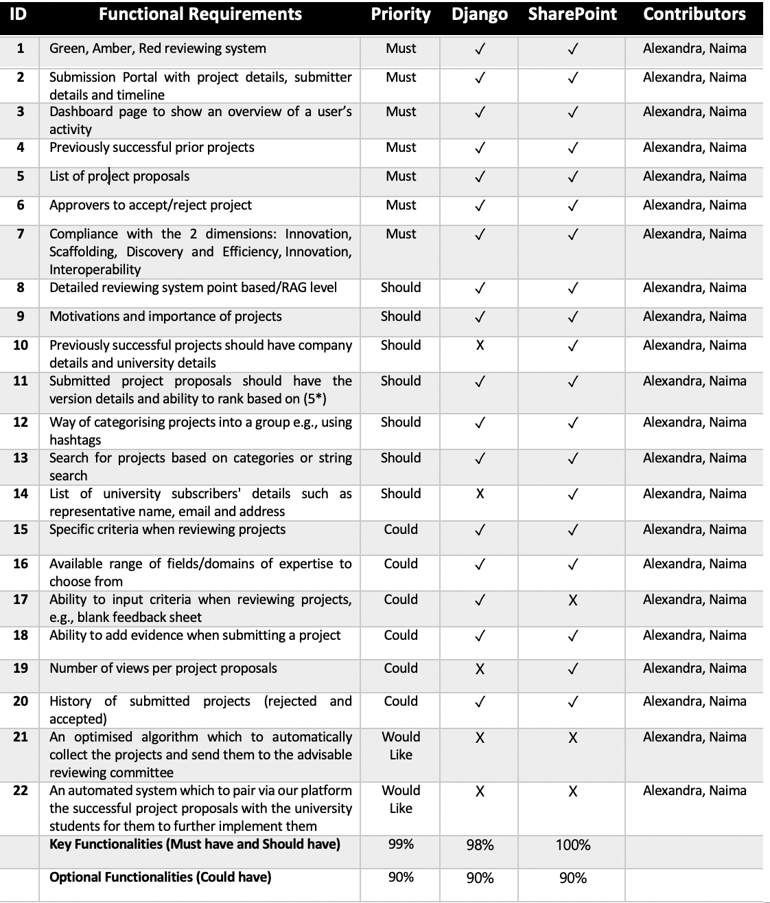

Summary of achievements
An achievement table to list the MoSCoW features, the completed states, and contributors

List of known bugs
| Bug |
System |
Priority |
| Expertise skills and technologies required saved in incorrect format in excel sheet, does not save value but the json |
SharePoint |
Medium |
| Showing some braces and comments on the display of review portal, just need to comment it out in deployment code. It is updated in the repo but not in the deployment code. |
Django |
Low |
| Missing pagination in the project grid and project list display |
Django |
Medium |
| Submission portal start process button was not showing on the screen for a 2010 iMac using Safari as a browser. All other elements could be vieweed. |
Django |
High |
Individual contribution table
| Work packages |
Naima Sultana |
Alexandra Irimia |
Cian Goon |
| Client Liasion |
25% |
60% |
15% |
| Requirement Analysis |
35% |
35% |
30% |
| Research |
40% |
20% |
40% |
| UI design |
33.3% |
33.3% |
33.3% |
| Programming |
50% |
50% |
0% |
| Testing |
45% |
45% |
10 |
| Development Blog |
33.3% |
33.3% |
33.3% |
| Website Editing |
50% |
20% |
30% |
| Overall Contribution |
39% |
37% |
24% |
| Roles |
Back-end Developer
Tester, Report Website Editor |
Front-end Developer, Tester, Report Website Editor, Client Liaison |
Researcher, Report Website Editor, UI Designer |
Critical evaluation of the project
User interface / user experience [TODO]
After feedback from the users, most users expressed that the UI was very clear to use and user-friendly. They expressed
the layout was very clear and simple enough to understand for both systems and it the mapping was successful for both systems. Users also expressed the system
successfully achieved the usability goal of effectiveness, and that is successfully met the main functional requirements of the system. The users also expressed
that the systems were learnable as well as memorable which is an important aspect of usability.
In the future, I think our UI could be improved by increasing the feedback of our systems. For instance, it should be clearer which button has been pressed by the user, perhaps by highlighting the buttons. It should also give
a clearer UI of whether a project has been approved/rejected as well as when a person has successfully given feedback. This could improve clarity
of the user-experience. The visibility of the system could also be improved by clearly marking aspects of the system that is clickable, this could be done by changing the colour
when you hover over the button.
Functionality [TODO]
We think both systems provide the main functionalities required for a CFP portal. In both systems, the user can submit projects which will be collected and displayed for
reviewers to view. The reviewers are able to categorise projects and search for them as necessary. Both systems also have the functionality of adding feedback to a project,
with the criteria being easily changeable in both systems. Finally, in both systems, an approver is able to accept or reject the project by viewing the feedback given, which will be
stored in an accepted projects database. The users are also able to export the data as required.
However, I think we can improve the functionality of some aspects of both systems. For example, in the Django system, currently the user
can only export the full project list or the full accepted list. I think it would have been better if we had added the functionality to export the data that is currently being displayed so results
of queries could also be exported too.
Stability [TODO]
Due to the nature of Microsoft Sharepoint, the style and implementation of the lists and flows cannot be altered much as a user. The stability is maintained by Microsoft and as an user you cannot
change the internal structure of these which may alter the overall functionality and stability of the system. Both technologies have been vastly used within organisations and tested under performance and
over a large workload. As a result, the flows and lists are very stable and unlikely to present bugs or errors.
In the future, it would be beneficial to implement an archiving feature in both systems, as over time the number of projects submitted may overwhelm the system and so may result in instability
due to the huge amount of data. The archiving feature could archive the database used and hence reset the project displays.
Efficiency [TODO]
[TODO: talk about good things]
In the SharePoint implementation, it would have been better to display the lists according to the projects that have been assigned to you instead of the entire collation of projects, as this may be difficult
to sort through and display. This may have been more efficient for the users, as otherwise they have to filter or search through it accordingly.
Compatibility [TODO]
[TODO: talk about good things]
In Django system, in the future I think it would have been beneficial to implement a single sign on method into the system. This prevents a user from creating a new
account solely for our system, and would have allowed them to use their pre-exisiting account. We were unable to implement this due to
lack of time, but in the future I think this would have increased compatibility of the Django system with many different organisations, as they could have integrated their
pre-existing credentials with our system.
Moreover, in the Django testing revealed that some elements of our system were not rendered by our browser and were not being displayed. For instance, a user using a 2010 iMac using Safari could not view the submission portal. I think in the future, it would be better
if we could test our system on multiple operating systems and devices as all three team members use a relatively new MacOS laptop, and so may not be an accurate representation of the systems which are used in organisations such as a NHS
which may have a large variety of different systems in terms of operating system, model and age. In the future, we would have preferred to test the compability of our system thoroughly and also have formatted it to be
usable on mobile devices, as currently it is only formatted correctly using a laptop. Many users may not necessarily use a laptop for this feature, and so in the future it would be good to develop this for mobile devices too.
Maintainability [TODO]
The SharePoint system is very easy to maintain due to the robustness of the system. Power Automate handles the majority of the back-end and is well maintained by Microsoft. If a flow failed, the owner would receive emails alerting them of
this as well as the source of the error. As a result, any bugs can be easily fixed or improvements can be made easily to flows. However, any bugs found in the execution of the flows or the lists may be more difficult to fix due to the inability
to change the internal structure of these as a regular user. If these bugs persist, a problem is that you will have to depend on Microsoft to fix these issues internally.
Project management [TODO]
Future work [TODO]
There are multiple things we wanted to implement and progress further, however could not due to lack of time. For example:
Include a single sign on (SSO) option for the Django implementation so users can integrate their pre-exisiting accounts to the system, preventing the need to create a new account from scratch
Greater front-end styling and implementation for the SharePoint solution so it can be integrated into the site with this styling.
Functionality in both system for users to subscribe to the system.
More advanced querying in the django and a more sophisticated technique of database storage
Implement ML/AI solutions to provide suggestions of project proposals based on previous projects, as well prompting users for possible tags they could use.